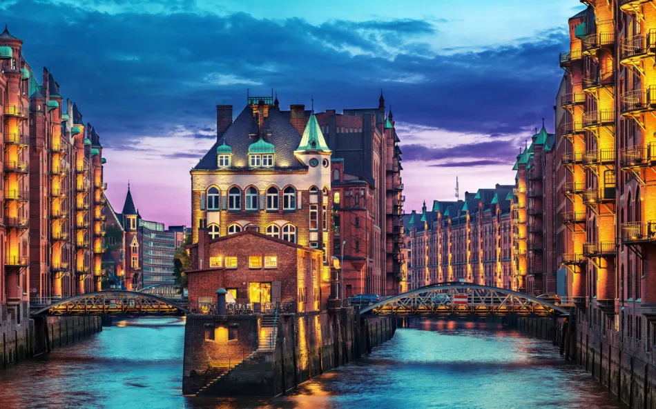

Descripcion del pais
Alemania, oficialmente República Federal de Alemania, es un país ubicado en Europa Central. Es la economía más grande de Europa y la cuarta a nivel mundial. Berlín es su capital y ciudad más grande, mientras que otras ciudades importantes incluyen Hamburgo, Múnich y Fráncfort del Meno. Limita con Dinamarca al norte, Polonia y la República Checa al este, Austria y Suiza al sur, y Francia, Luxemburgo, Bélgica y los Países Bajos al oeste. Alemania es conocida por su rica historia, desde el Sacro Imperio Romano Germánico hasta el papel central en la Segunda Guerra Mundial y su posterior división y reunificación. El idioma oficial es el alemán. Alemania tiene una fuerte tradición cultural en música, filosofía, ciencia y tecnología, y es famosa por su Oktoberfest y su excelencia en la ingeniería y fabricación, especialmente en la industria automotriz.
5 lugares para ir de vacaciones
1. Berlín
Berlín, la capital de Alemania, es una ciudad vibrante y dinámica, conocida por su rica historia y cultura contemporánea. Los visitantes pueden explorar la Puerta de Brandeburgo, el Muro de Berlín y el Reichstag, el edificio del Parlamento alemán. La Isla de los Museos, Patrimonio de la Humanidad de la UNESCO, alberga algunos de los museos más importantes del país. Además, Berlín es famosa por su vida nocturna, con una gran cantidad de bares, clubes y restaurantes.
2. Múnich
Múnich, la capital de Baviera, es famosa por su arquitectura histórica, sus museos y su famoso festival de la cerveza, el Oktoberfest. El Marienplatz, la plaza principal de la ciudad, es un punto de encuentro popular, rodeado de impresionantes edificios como el Nuevo Ayuntamiento con su famoso carrillón. El Palacio de Nymphenburg y el Museo BMW son otras atracciones imperdibles. Múnich también ofrece acceso fácil a los Alpes bávaros, perfectos para los amantes de la naturaleza y el esquí.
3. El Valle del Rin
El Valle del Rin es una región pintoresca famosa por sus castillos medievales, viñedos y pintorescos pueblos. Un crucero por el río Rin ofrece vistas espectaculares de estos castillos, muchos de los cuales están abiertos al público. La región también es conocida por su producción de vino, especialmente el Riesling, y ofrece numerosas bodegas para visitar y degustar. Ciudades como Bacharach y Rüdesheim am Rhein son ejemplos perfectos de la encantadora arquitectura y hospitalidad de la región.
4. La Selva Negra
La Selva Negra, en el suroeste de Alemania, es una región montañosa cubierta de densos bosques y famosa por sus relojes de cuco. Es un destino ideal para los amantes de la naturaleza y las actividades al aire libre, ofreciendo senderismo, ciclismo y estaciones de esquí en invierno. El encantador pueblo de Triberg alberga las cascadas más altas de Alemania, mientras que Baden-Baden es famoso por sus spas termales. La región también está llena de leyendas y tradiciones culturales que enriquecen la experiencia del visitante.
5. Hamburgo
Hamburgo, una ciudad portuaria en el norte de Alemania, es conocida por su puerto, uno de los más grandes de Europa, y su vibrante vida cultural. El Miniatur Wunderland, la mayor maqueta de trenes del mundo, y el histórico barrio de almacenes Speicherstadt son atracciones destacadas. La Filarmónica del Elba, con su arquitectura impresionante y su acústica de clase mundial, ofrece conciertos para los amantes de la música. Hamburgo también cuenta con una vida nocturna activa y numerosos parques y canales para disfrutar de paseos escénicos.
Datos curiosos
1. El Festival de la Cerveza
El Oktoberfest de Múnich es el festival de la cerveza más grande del mundo. Se celebra anualmente desde 1810 y atrae a millones de visitantes de todo el mundo. Durante las dos semanas que dura el festival, se consumen aproximadamente 7 millones de litros de cerveza. Además de la cerveza, el festival ofrece una gran variedad de platos tradicionales bávaros, música en vivo y juegos mecánicos, creando una atmósfera festiva única.
2. Ingeniería y Automóviles
Alemania es famosa por su ingeniería y producción automotriz de alta calidad. Marcas icónicas como BMW, Mercedes-Benz, Audi, Porsche y Volkswagen tienen su origen en Alemania. El país no solo produce algunos de los autos más avanzados y lujosos del mundo, sino que también es pionero en tecnologías de conducción autónoma y vehículos eléctricos. La Autobahn, la famosa red de autopistas alemana, es conocida por tener tramos sin límite de velocidad, lo que la convierte en un atractivo para los entusiastas de los autos.
3. Panes y Bollería
Alemania es un paraíso para los amantes del pan, con más de 300 tipos de pan y 1,200 tipos de bollos y pasteles. El país tiene una profunda tradición panadera y cuenta con innumerables panaderías que ofrecen una increíble variedad de productos horneados, desde el clásico Bretzel hasta panes integrales y dulces como el Berliner. El pan es un elemento esencial de la dieta alemana, y cada región tiene sus propias especialidades y recetas tradicionales.
Quiz
¡Prueba tus conocimientos con este Quiz!
Gracias por participar
Tu puntaje fue: